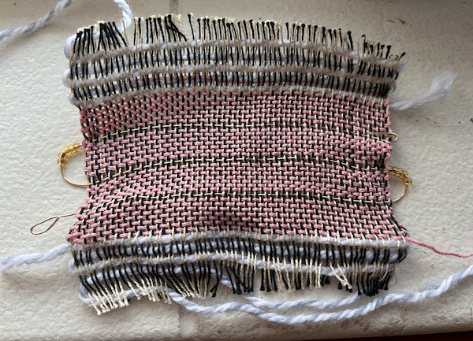
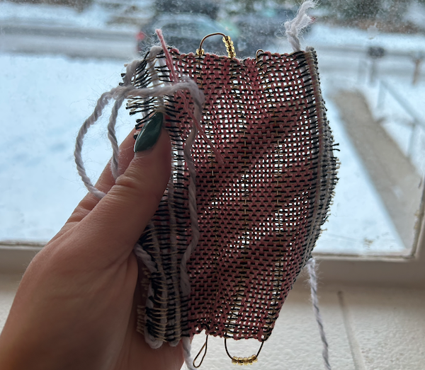
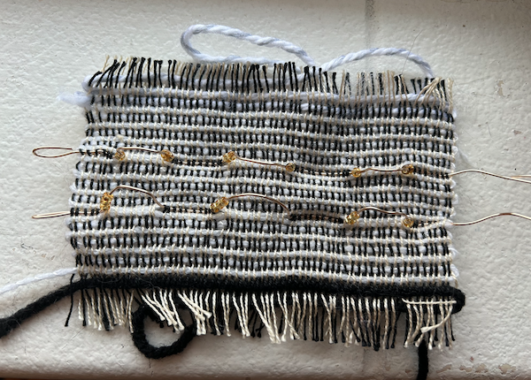
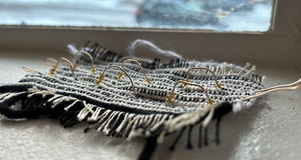
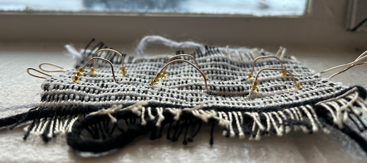
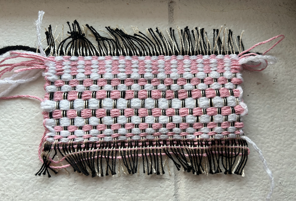
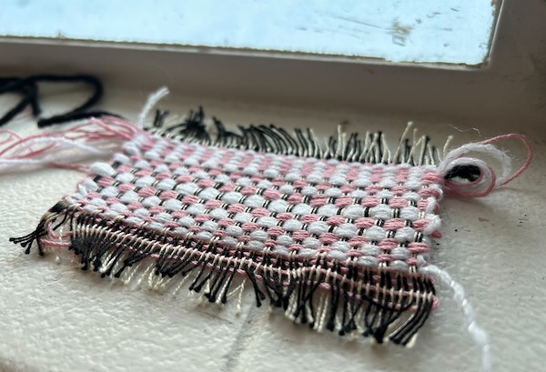
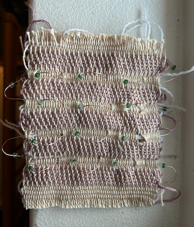
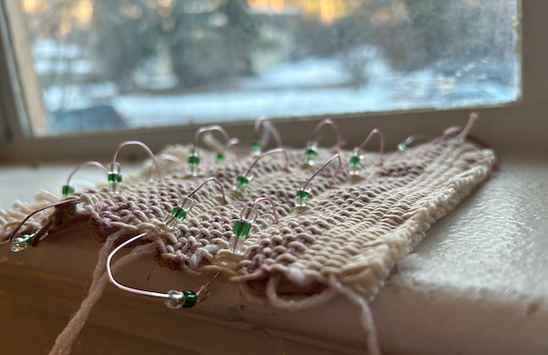

final project
This assignment was completed on December 11, 2023
For my final, my explorative question was "how can I weave a cloth that can help ease sensory processing challenges?" My heuristic was that I would like to work with wire and create different touch surfaces.
sample one
 For my first swatch, I wanted to create a sort of looping selvage that I would bead made of wire. I was inspired by the wire children’s toy where the child would move wooden blocks from one end of the wire to the other. I wanted to create a more refined adult version through cloth.
My first key point was when I had to decide for the swatch what type of structure I wanted to use. I knew I wanted to experiment with structures to create my touch surfaces, but I wasn’t sure if the wire would mess with it, so I decided to go with a twill structure to start off. I chose this because it had more visual interest than tabby, but a basic stitch to start.
The second key point was deciding how dense I wanted my swatch to be. I wanted there to be room to feel the wire, so I gave the swatch some room between fibers. I wanted the wire to clearly be there and incorporated into the swatch, which I did end up accomplishing through my decision to keep the swatch airy and open.
My last key point was deciding how to end the wire segments. I knew that because the swatch was meant to be touched and handled in many ways (including being bent, turned, brushed, etc.) I wanted to make sure that no one poked or hurt themselves when handling the swatch. I decided to bend the wire in on itself so there wasn’t a way to snag or poke.
- sample two -
  description
key point one
key point two
key point three
- sample three -
 description
key point one
key point two
key point three
- sample four -
 
description
key point one
key point two
key point three
- reflection -
As a whole, the loom was not my favorite in comparison to the floor loom. I found the floor loom to be much more intuitive and fun to use, so I will try to work on there from now on. I would like to try the pocket again in the future as I think that two layer structures are really important to understand.